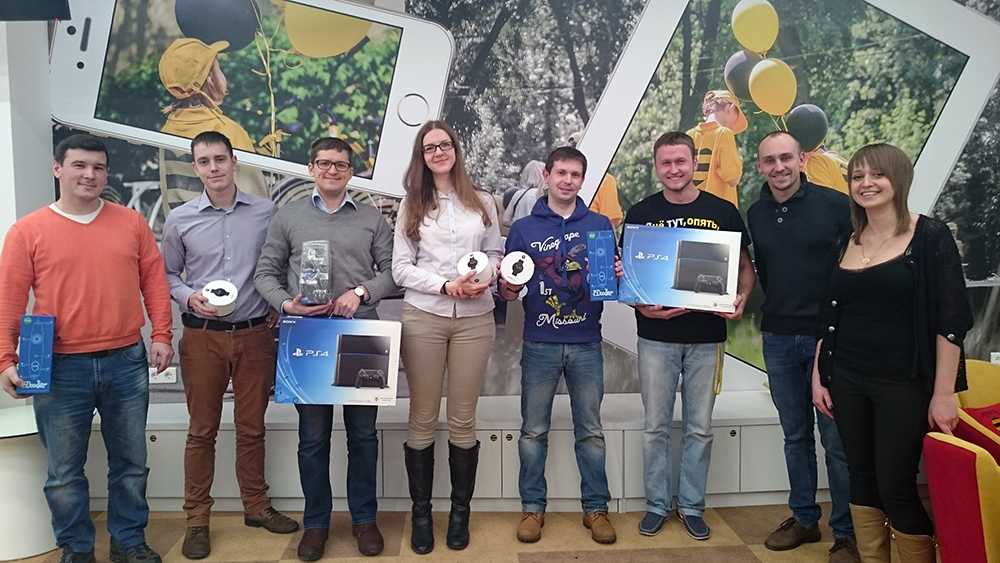

Успех не исчезает
Мое приложение все также не устает удивлять.
Ради удовольствия очередной раз я решил отправить заявку на конкурс. Выбор пал на IT-planet. Не особо заморачиваясь с описанием и грамматическими ошибками, я выложил в конкурсную группу вое приложение. Благополучно забыл.
Вскоре началось объявление результатов. Поначалу я думал, что занял место, проводящее меня финал, но оказалось не так. Я лишь оказался ~30 в общем рейтинге. Зато по России 17 и по Москве 8, что достаточно не плохо! А вот и скрин:
Скриншот выписки результатов разработчиков приложений. 37 баллов!2 место. Актуальность
Однажды, совершенно случайно, серфя по вк, я наткнулся в группе своего ВУЗа на объявление о конкурсе идей приложений от билайна.
Из-за моей любви ко всему этакому, я совершенно не задумываясь зарегистрировал свой проект "Экономия топлива" на участие в конкурсе. Описание я скопипастил на Google Play, где уже заморачивался об этом. Все шаги были выполнены, и я благополучно забыл о конкурсе. помня лишь дату, когда надо посмотреть результаты, чтобы, как обычно у меня бывает, остаться в дураках
Немного позабыв обо всем, я опомнился лишь через два дня после официального объявления результатов, но, как оказалось, их еще и не объявили. И вот, 23 декабря после сданного зачета, я вижу необычное письмо на электропочте. Меня с чем-то поздравляют. Я немного вчитался и понял, что занял второе место. Конечно же, меня заинтересовал приз и человек, который занял первое место. Я выиграл "умные" часы, человек, занявший первое PlayStation. Для меня часы оказались идеальным подарком, я ношу их по сей день. В PlayStation я бы не играл(не люблю тратить время на игры), а 3d ручка(3 место), на мой взгляд, является хреново выполненной безделушкой
Таким образом мой первый опыт создания приложения по Android помимо 3к скачиваний еще и заслужил достойный приз среди судей.
 В трех номинациях члены жюри отобрали 9 лучших идей, авторы которых получили от «Билайн» призы: Play Station 4, Часы Moto 360, 3D ручка 3Dooler.Hello World!
Когда-то давно у мены были отчаяяные попытки начать программирование под мобильную платформу Android. IOS была для меня не доступна в план фирмы производителя ноутбука. Дело дальше создания "Hello World" в Eclipse не зашло. И вот настал день, когда решил создать нечто больше.
Порядка недели я искал идею для своего будущего приложения. И вот выбар пал на приложение, позволяющее экономить бензин водителям. Посоветовавшись с окружающими я убедился в актуальности идеи и начал клепать.
Начал я со стандартной прорисовки экрана меню. Все шло гладко и не предвещало серъезных проблем. В качестве сервера я выбрал кпрощенный вариант Parse.com. Он отлично присылал и получал данные, да и был очень прост в настройке и взаимодействии.
Все бы ничего, если бы мне не понадобилось добавить Google Maps. Ох тут я и завис. Порядка месяца я потратил на чтение мануалов и понимая смысла кажждого шага. Но этот железный засов не открывался, карты так и не грузились ни на эмуляторе, ни на реальном девайсе. С горем пополам я нашел на каком-то заброшенном форуме информацию о том, что это карты должны быть скачаны полной библиотекой в IDE, и ,эврика!, все азработало. Я был невероятно рад, моя программа завелась. Я доделал некоторые части приложения, заплатил сбор Google Play, забросил свое приложение туда, добавил описание и стал ждать закачек. Первый день все было плохо, и я растраивался. Но дальше становилось лучше и на сегодняшний день я уже имею 3к закачек, 1% которых пользуются платной версией моего приложения.